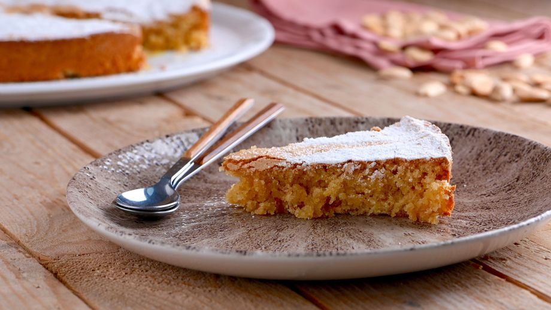

Tarta de Santiago
Sergio Fernández
12 SEPT 2014

- 250 g de harina de almendra
- 5 Huevos
- 250g de azúcar
- 1 limón
- azúcar glas
- Tiempo: medio
- Dificultad: bajo
- Comensales: 4
Cómo se hace:
- En un bol mezclamos la harina, los huevos, el azúcar, la canela y la cáscara del limón. Debemos conseguir una mezcla uniforme.
- Forramos un molde con papel de hornear para que después sea más fácil desmoldar la tarta.
- Volcamos la mezcla en el molde y horneamos a 180ºC durante 30 minutos.
- Cuando la tarta esté fría colocamos una hoja con la forma de la cruz de Santiago encima y espolvoreamos azúcar glas.